PROFESYONEL İZOLASYON ÇÖZÜMLERİ
Yapınızı geleceğe
güvenle taşıyın.
Isı, çatı, mekanik ve boru izolasyonunda profesyonel çözümler.
Teklif AlNE YAPIYORUZ?
Hizmetlerimiz
Isı İzolasyonu
Yapılarda ısı kaybını azaltmaya ve enerji verimliliğini artırmaya yönelik izolasyon çözümleri.
Çatı İzolasyonu
Çatıların dış etkenlere karşı korunması için dayanıklı ve uzun ömürlü izolasyon uygulamaları.
Mekanik İzolasyon
Mekanik tesisat sistemleri için uygun izolasyon çözümleri ve profesyonel uygulamalar.
Boru İzolasyonu
Boru hatlarında ısı kaybını ve dış etkenlerin oluşturabileceği sorunları azaltmaya yönelik çözümler.
Çimento fabrikaları, termik santraller, kâğıt fabrikaları, kimyasal fabrikalar ve stokollerde; çatı trapez sac kaplama, demontaj ve montaj işleri.
Elektrik santrallerinde tribün gövdesi, ceket ve iğneli çamur izolasyon işleri.
NEDEN GÜNEŞ YAPI?
Neden Güneş Yapı?
Tecrübeli Ekip
İzolasyon uygulamalarında deneyimli ekiplerimizle profesyonel çözümler sunuyoruz.
Kaliteli Uygulama
Projelerin ihtiyaçlarına uygun, dayanıklı ve uzun ömürlü uygulamalar gerçekleştiriyoruz.
Profesyonel Çalışma
İş güvenliği ve uygulama standartlarını gözeterek titiz bir çalışma yürütüyoruz.
Çözüm Odaklı
Her projeye özel ihtiyaçları değerlendirerek uygun izolasyon çözümleri geliştiriyoruz.
ÇALIŞTIĞIMIZ ALANLAR
Çalıştığımız Sektörler
Çimento Fabrikaları
Elektrik Santralleri
Termik Santraller
Kimyasal Fabrikalar
Kâğıt Fabrikaları
REFERANSLARIMIZ
Önceki İşlerimiz
Gerçekleştirdiğimiz çalışmalardan bazı örnekleri burada görebilirsiniz.
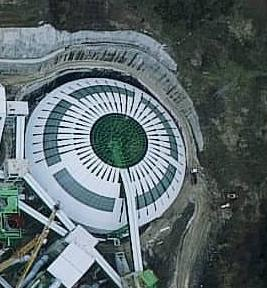
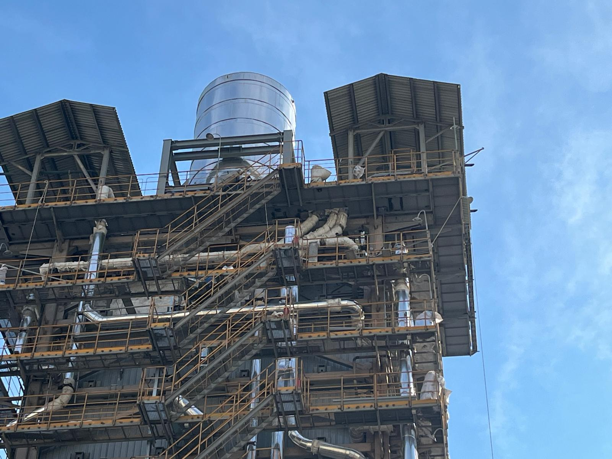
Atık ısı dönüşüm, boyler kazanı gövdesi ve buhar çıkış boruları izolasyon imalatı ve montaj işleri
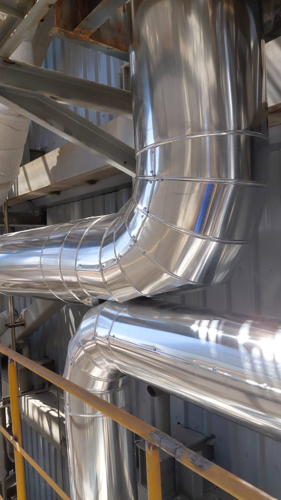
Atık ısı dönüşüm, boyler kazanı gövdesi ve buhar çıkış boruları izolasyon imalatı ve montaj işleri
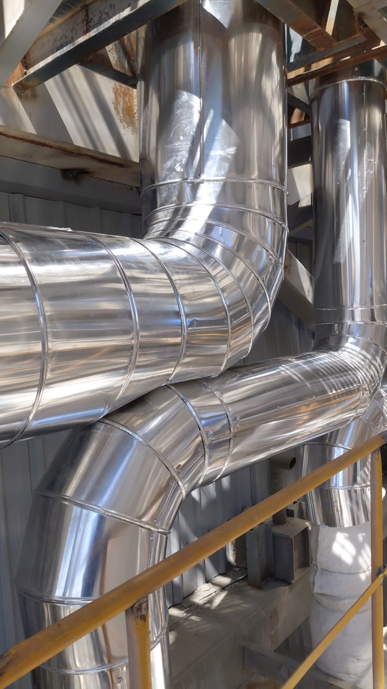
Atık ısı dönüşüm, boyler kazanı gövdesi ve buhar çıkış boruları izolasyon imalatı ve montaj işleri
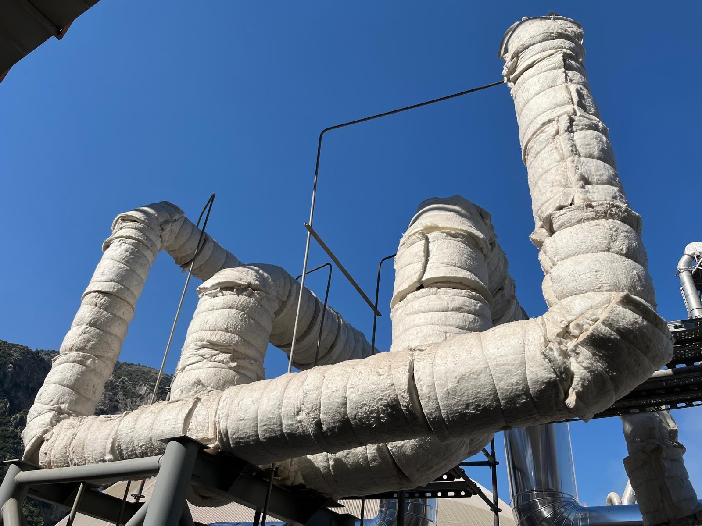
Atık ısı dönüşüm, boyler kazanı gövdesi ve buhar çıkış boruları izolasyon imalatı ve montaj işleri
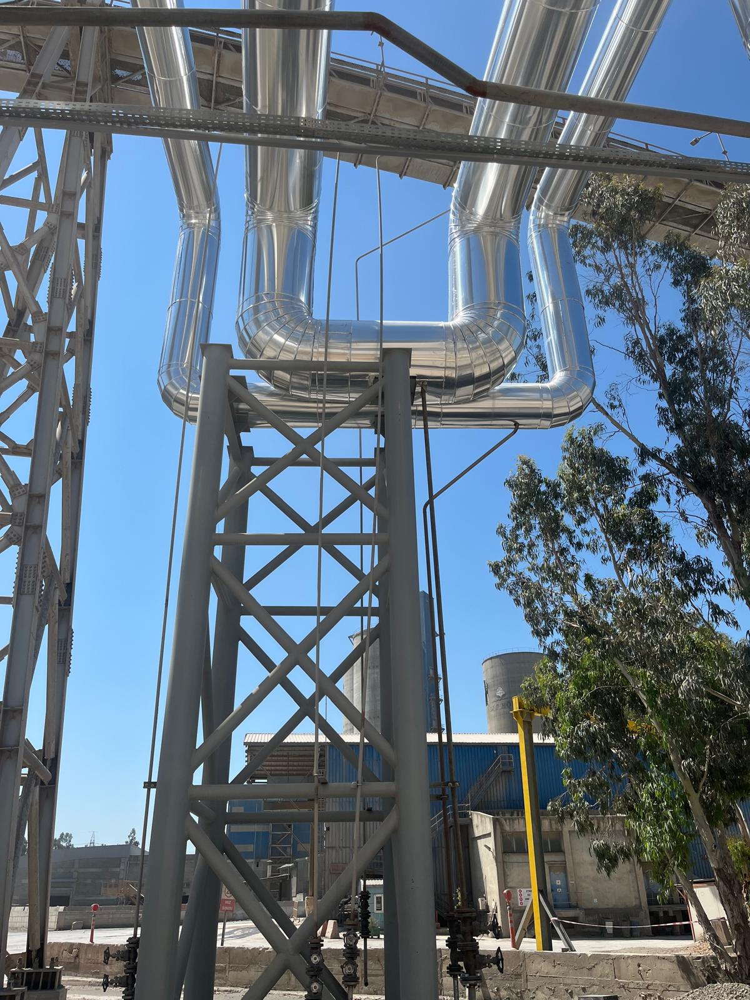
Atık ısı dönüşüm, boyler kazanı gövdesi ve buhar çıkış boruları izolasyon imalatı ve montaj işleri
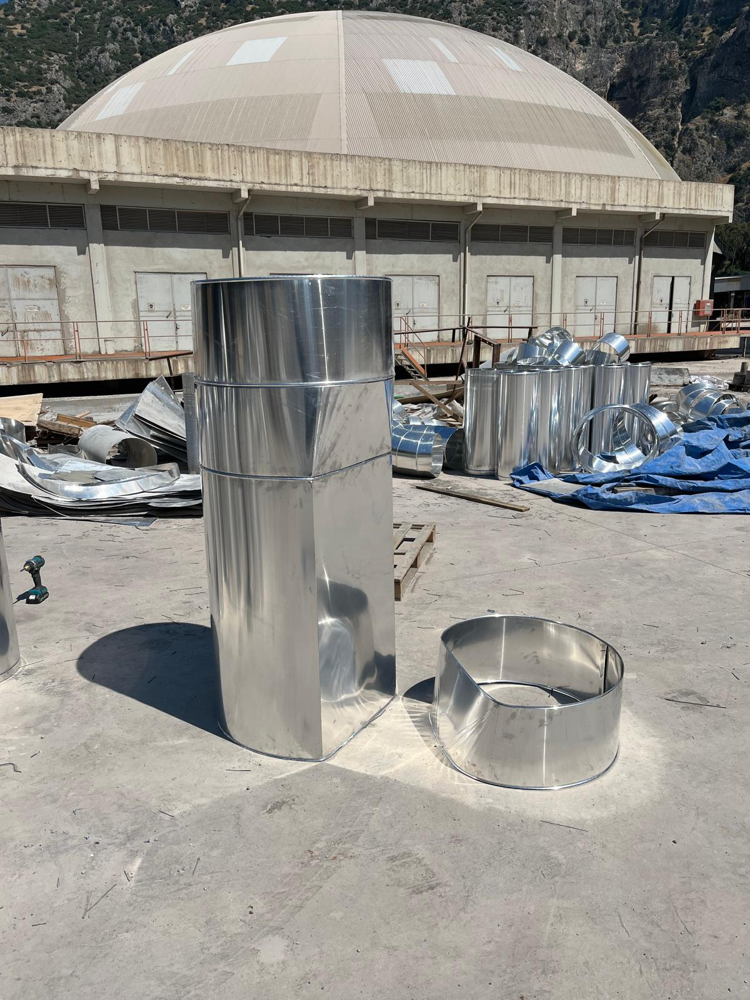
Atık ısı dönüşüm, boyler kazanı gövdesi ve buhar çıkış boruları izolasyon imalatı ve montaj işleri
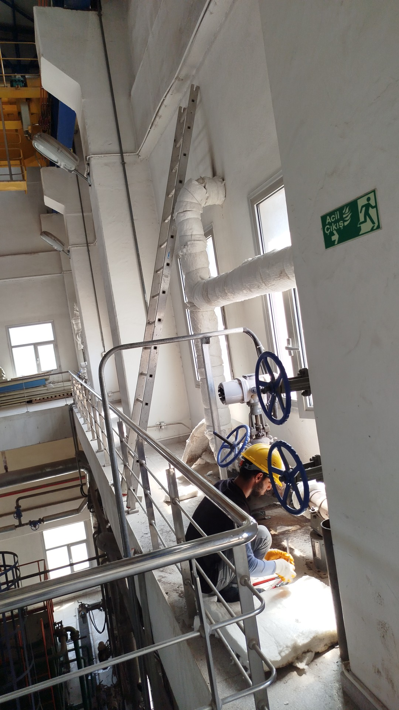
Atık ısı santrali türbin ünitesi buhar hatları izolasyon işleri
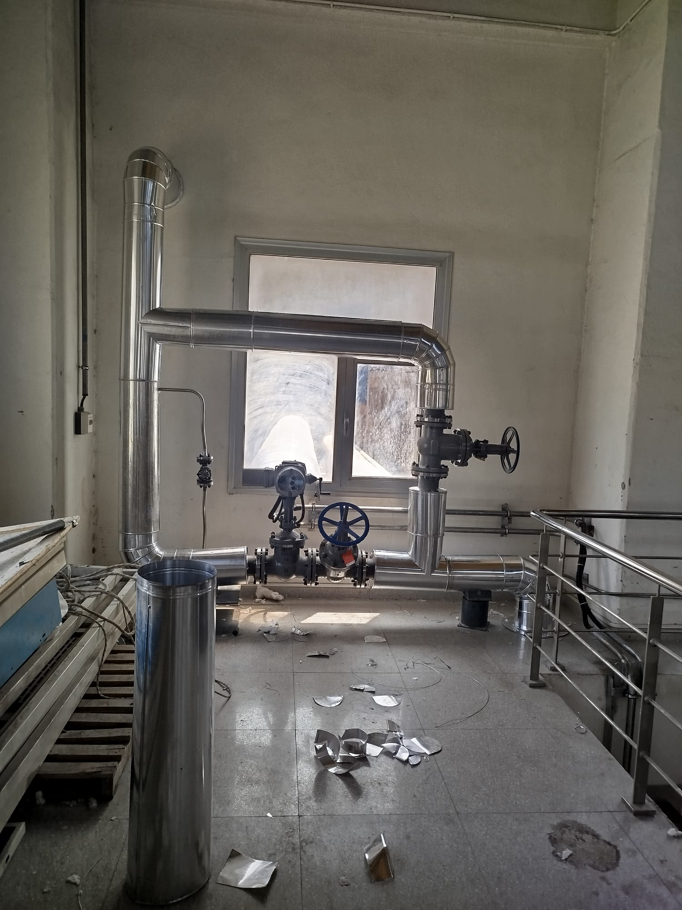
Atık ısı santrali türbin ünitesi buhar hatları izolasyon işleri
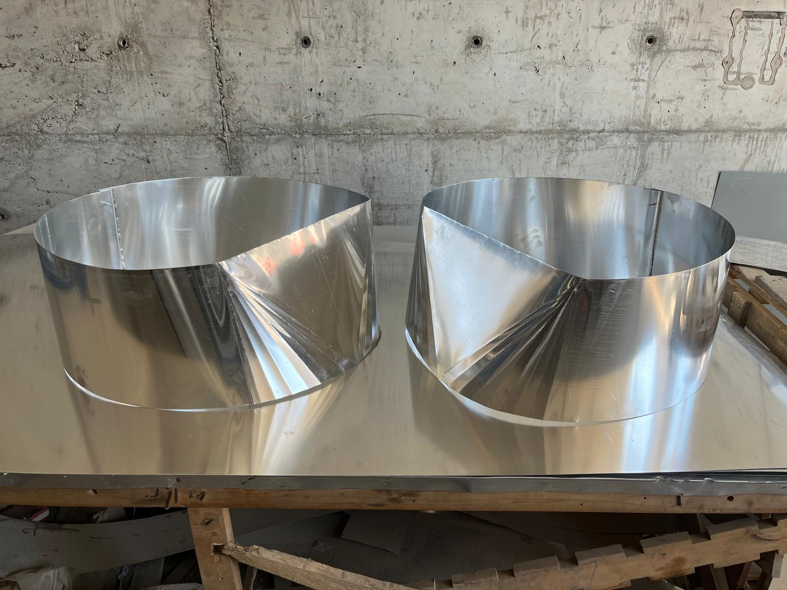
Atık ısı dönüşüm, boyler kazanı gövdesi ve buhar çıkış boruları izolasyon imalatı ve montaj işleri
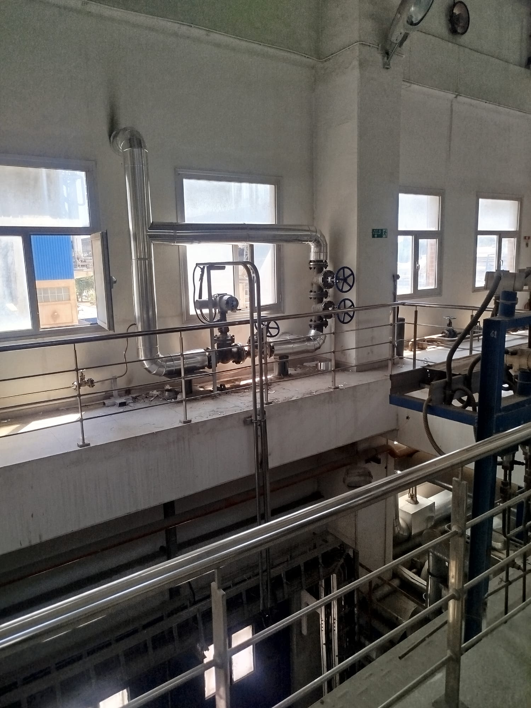
Atık ısı santrali türbin ünitesi buhar hatları izolasyon işleri
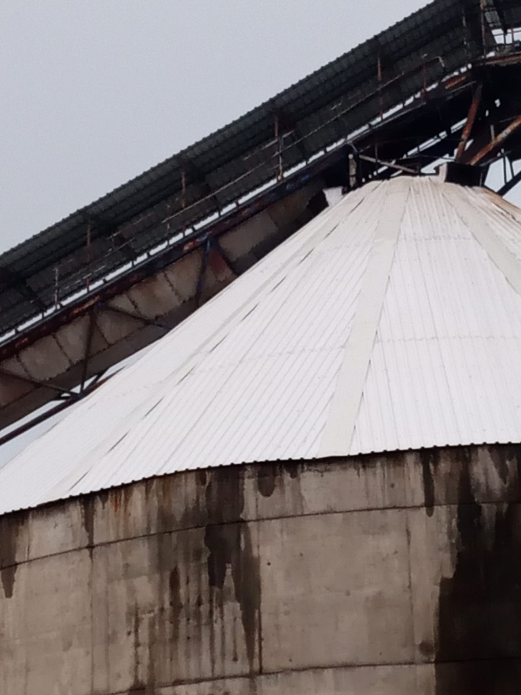
Hammadde stokhol çatı kaplama montajı, bakım ve onarım işleri
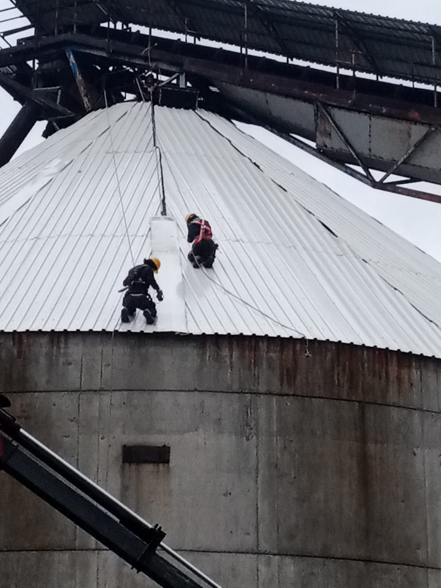
Hammadde stokhol çatı kaplama montajı, bakım ve onarım işleri
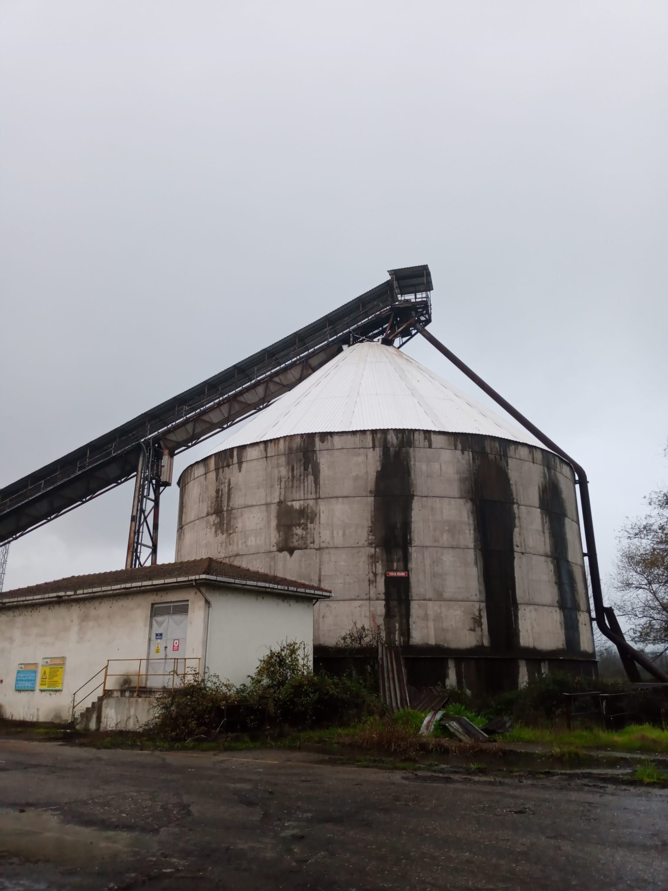
Hammadde stokhol çatı kaplama montajı, bakım ve onarım işleri
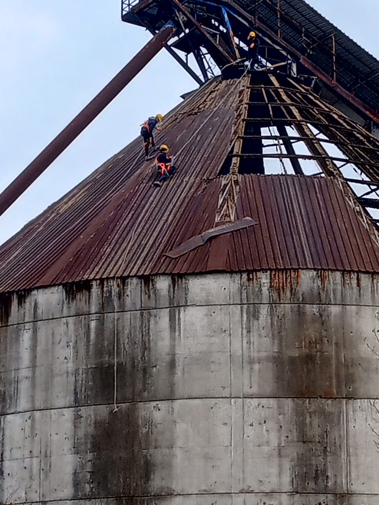
Hammadde stokhol çatı kaplama montajı, bakım ve onarım işleri
PROJENİZ İÇİN
İzolasyon İhtiyaçlarınız İçin Teklif Alın
Projenizin ihtiyaçlarını birlikte değerlendirelim. Detaylı bilgi ve teklif almak için bizimle iletişime geçebilirsiniz.
WhatsApp'tan Teklif AlBİZE ULAŞIN
İletişim
İzolasyon hizmetleri hakkında bilgi almak veya teklif talep etmek için bizimle iletişime geçebilirsiniz.
📍 Adres
Üçevler Mahallesi, 893. Sokak No: 29,
Kat: 4, Daire: 6
Esenyurt / İstanbul
📞 Telefon
0553 930 20 87
💬 WhatsApp
WhatsApp'tan iletişime geç
🕐 Çalışma Saatleri
08:00 – 17:00